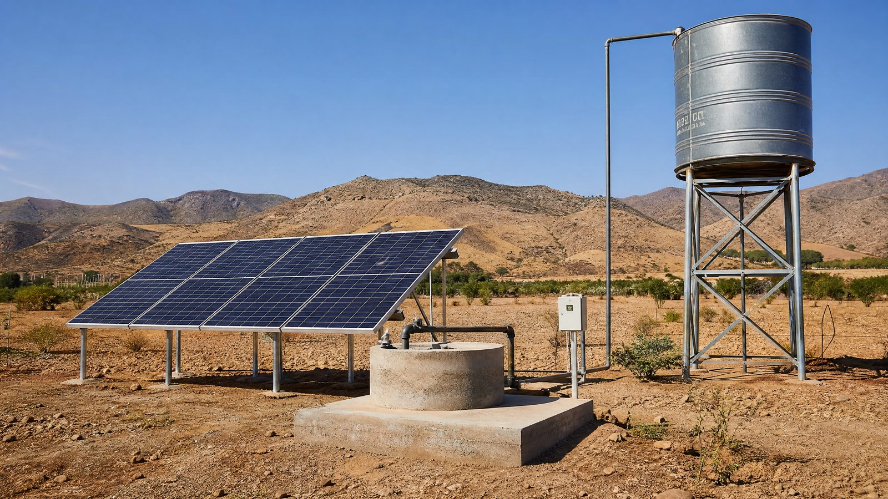

The single most expensive thing on many farms and homesteads is water that must be lifted from the ground, and the single most expensive way to lift it is with diesel. A solar water pump removes the fuel bill entirely, and because water can be stored in a simple tank, it removes the battery bill too. What remains is a decision that comes down to four questions: how deep is the water, how much water do you need per day, should the pump run on DC or AC, and how many panels does that actually require — and this guide answers all four in order.
DC vs AC pumps: which one for solar?
Water pumps for solar come in two electrical flavors, and the choice shapes the whole system. A DC pump connects straight to the panels through a simple pump controller: there is no inverter, no conversion loss, and the motor begins turning at surprisingly low morning light. DC pumps dominate the market for flows up to a few hundred litres per minute, and a brushless DC (BLDC) submersible is the default recommendation for wells under about 10 HP equivalent. An AC pump needs an inverter or a solar pump controller with a built-in mini-inverter — which adds roughly 5-10% losses — but makes sense when you already own a capable AC submersible, or when irrigation duties demand the cheap, powerful AC motors used in big systems.
| Factor | DC pump (direct drive) | AC pump (with controller) |
|---|---|---|
| Efficiency | Best — no inverter losses | 5-10% lost in conversion |
| Start-up light | Very low — pumps early morning | Needs stronger sun |
| Typical range | Small homestead & livestock | Medium to large irrigation |
| Reuse existing pump? | No — new pump needed | Often yes, with a controller |
How many panels does a water pump need?
The sizing rule is refreshingly simple: the solar array should be 1.3 to 1.5 times the pump motor's rated wattage. The extra capacity compensates for heat, dust, panel aging, and the fact that a pump controller needs headroom to reach full flow. A 1 HP motor draws about 750 W, so the array target is roughly 1,000-1,100 W — three modern 380-450 W panels for a DC pump, or 1,300-1,500 W if you are running it through an inverter. Then check the second constraint: your daily water volume. If the pump delivers 20 L/min and you need 10,000 L per day, that is 500 minutes of pumping — about 8.5 hours — which only a generously sized array can sustain in shoulder seasons.
Array (W) ≈ pump motor (W) × 1.3 … 1.5 — then check daily litres
The two numbers on every pump nameplate decide everything: head (vertical lift from water level to delivery point, plus friction loss in the pipe — every 100 m of horizontal pipe adds roughly 1-2 m of head) and flow in litres per minute. Multiply them and you get the hydraulic work. A shallow well at 30 m with modest flow is a three-panel job; a 120 m deep well at good flow is a twelve-panel job, even if the motors look similar.
Why almost nobody needs batteries
Batteries store electricity, and electricity is the expensive way to store energy for pumping. The cheap way is to store water: an elevated tank or ground reservoir pumped full during the day delivers water all evening by gravity, at zero maintenance and a twenty-year life. This is why the textbook solar pumping layout — panels, controller, pump, tank — has no battery in it. The one exception is a pressurized irrigation network that cannot tolerate a tank in the line; there, a small dedicated battery bank is better than nothing, but size it for the pump motor only, not for the house.
One caution from the field: size the tank for the worst month, not the average. In the dustiest, haziest month your array may deliver 70% of its rated output, so if your daily need is 10,000 L in summer but 3,000 L in winter, design the array and tank around the winter requirement — a pump that cannot meet winter demand is worse than one that over-pumps in summer.
Real costs in 2026
A complete 1 HP homestead system — submersible or surface pump, 1,000-1,300 W of panels, pump controller, cabling, and mounting frame — typically lands between $1,200 and $2,500 installed in most markets, and pays itself back in two to five years against diesel. Agricultural systems scale up smoothly: a 5-10 HP irrigation pump with a 5-10 kW array runs $6,000-15,000. The economics improve everywhere fuel is subsidized poorly or grid power is unreliable, and many countries now subsidize solar pump replacement directly, so always check your agriculture ministry's program before buying. In hot dusty regions, budget for an annual panel wash — dust alone can cost you 10-20% of daily output, which for a pump is water you never lifted.
Field note (Ma'an, southern Jordan): our first solar pump job was a 70 m well feeding a livestock trough in a place where the diesel bill was eating the whole farm budget. We put three 400 W panels on a fixed-tilt frame, a 1 HP DC submersible, and a 5,000 L tank on a 4 m stand. The pump never saw a battery, and the owner now fills the trough by 2 p.m. even in November. The lesson we repeat on every job: wash the panels monthly, and never trust a quoted "peak flow" — always ask for the flow curve at your actual well depth.
Installation checklist
Install in this order and you will avoid the common mistakes. First, measure the static water level and the drawdown during pumping — the pump must be rated for that total head, not just the well depth. Second, mount the panels on the south-facing tilt with a clear path from morning to afternoon sun; pumps suffer more from partial shade than any other solar load because the controller tracks a moving peak. Third, keep the DC cable run from panels to controller short and use the solar cable gauge the controller manual specifies — long thin DC runs are the number one cause of "my pump is slow." Finally, set the dry-run protection: a solar pump left spinning in an empty well burns a winding in minutes.
Frequently asked questions
Can a solar panel run a water pump directly without batteries?
Yes — this is the most common configuration. A 'direct-drive' solar pump system connects panels to a pump controller that adjusts the pump's speed to the sunlight available. The pump runs faster at midday and slower in the morning, and no battery is needed. Instead of storing electricity, you store water: the solar system pumps more than you need into an elevated tank, and gravity delivers it when the sun is down. Water storage is far cheaper and longer-lasting than battery storage.
How many solar panels do I need for my water pump?
A rule of thumb: the solar array should be roughly 1.3 to 1.5 times the pump's rated motor power. A 1 HP (750 W) DC pump typically needs about 1,000 to 1,100 W of panels — roughly three 380-450 W modules. For AC pumps, add the inverter loss on top: a 1 HP AC pump with a small inverter usually needs 1,300 to 1,500 W of panels. Your daily water need also matters: more litres per day means more panels or longer pumping hours.
Is a DC pump or an AC pump better for solar?
For small to medium systems, DC brushless pumps are the better match: they connect directly to the panels through a simple controller, lose no energy in an inverter, and start working at very low sunlight. AC pumps make sense when you already own a good submersible AC pump, or for large irrigation systems where cheap, powerful AC motors outweigh the inverter losses. Solar pump controllers with built-in small inverters now bridge this gap for AC motors too.
What depth of well can a solar pump handle?
Solar submersible pumps are commonly available for heads from 30 m (100 ft) up to 200 m (650 ft) and beyond. The two numbers that decide the pump are 'head' (vertical lift plus pipe friction loss) and 'flow' (litres per minute). Multiply head by flow and you get the hydraulic work your panels must do: higher head needs more voltage and more panels per litre pumped. Always size for the static water level plus drawdown, not just the well depth.
Do I need batteries for a solar water pump?
Almost never. Over 90% of installed solar pumping systems are battery-free. Water storage tanks (roof tanks, ground reservoirs, or water towers) replace batteries at a fraction of the cost and with zero replacement cycle. Batteries only make sense where water cannot be stored — some pressurized irrigation networks — and even then a small dedicated battery bank, not your home battery, is the usual solution.
How much does a solar water pump system cost in 2026?
A typical homestead system (1 HP surface or submersible pump, 1,000-1,300 W of panels, controller, cabling and mounting) runs about $1,200 to $2,500 installed in most markets, and pays for itself in two to five years against diesel fuel or grid tariffs. Larger agricultural systems (5-10 HP irrigation pumps with 5-10 kW arrays) cost $6,000 to $15,000 and are usually financed against the fuel savings. Check your local agriculture program — many countries in the Middle East, India and Africa subsidize solar pump replacements.